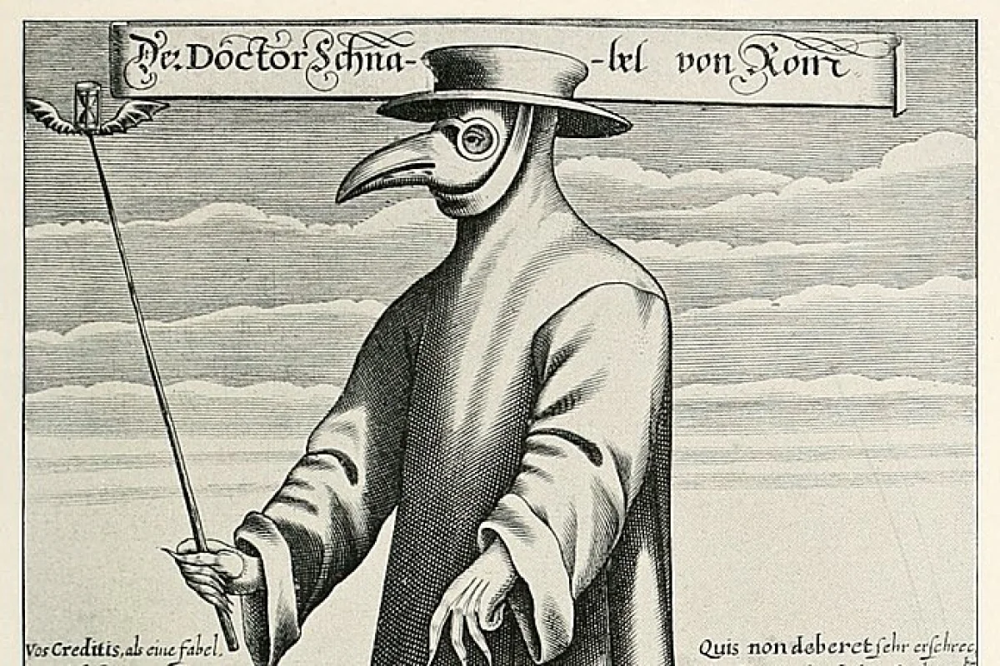

O que é?
A peste negra é o nome dado a peste bubônica, que causou uma pandemia em meados do século XIV. Ela é originada pela bactéria Yersinia pestis, que pode ser encontrada em pulgas, as quais geralmente ficam em ratos contaminados. A peste inicialmente foi transmitida de uma dessas pulgas que picou um humano e, a partir daí, foi sendo transmitida de pessoa para pessoa pela via respiratória ou por meio de secreções. Seus principais sintomas eram uma febre alta, complicações pulmonares e vômitos. Além disso, surgiam pelo corpo partes inchadas que eram denominadas pelo povo como bubões e também havia partes negras no corpo dos infectados, daí os nomes "peste bubônica" e "peste negra".
Origem
De maneira geral, a teoria mais aceita é que o local de origem da peste é a China, e que de lá ela foi se
espalhando para outros países
e continentes. Um exemplo disso é que o Egito, Mongólia, Síria, Mesopotâmia e parte da China teriam tido até
24
milhões de mortes no início
do século XIV em decorrência da peste. Mas e como ela chegou aos europeus?
Isso aconteceu devido a uma disputa que estava ocorrendo na década de 1340 na cidade de Caffa, localizada
onde é
atualmente a região da
Crimeia. Lá os tártaros em 1343 cercaram a cidade, mas somente em 1346 que houve uma grande mudança. Nesse
ano,
os tártaros lançaram
corpos com a peste para dentro de Caffa, o que ocasionou um surto na cidade. Com isso, vários genoveses que
estavam lá fugiram para outras
partes da Europa, assim espalhando a peste.
Os médicos e a Europa
Com a propagação extremamente rapida da peste na Europa e sua alta taxa de mortalidade, houve a necessidade de se combater tal praga. Para isso, os médicos iam as casas dos enfermos para tentar tratá-los e assim acabavam se contaminando com a peste. Vendo que o contato direto com os pacientes podia contaminar, os médicos passaram a vestir roupas feitas de couro para impedir que secreções de seus pacientes tivessem contato com eles. Além disso, eles usavam um bico similar ao de um pássaro que continha ervas aromáticas, as quais tinham o objetivo de amenizar o cheiro putrefato dos corpos em decomposição espalhados pela cidade. As pessoas de classes sociais mais abastadas e que tinham propriedades no campo geralmente tentavam se isolar da cidade, para evitar o contágio com a peste. De forma geral, podemos dizer que a peste bubônica abalou imensamente a Eurásia, causando entre 75 e 200 milhões de mortes.
Tratamento
Na época era muito variado, indo desde a sangria(que é a retirada de sangue do paciente como uma forma de
tratamento) até a utilização
de sanguessugas e rãs nas ínguas. Atualmente, a peste é tratada com o uso de antibióticos, os quais atacam
as
bactérias que a causam.